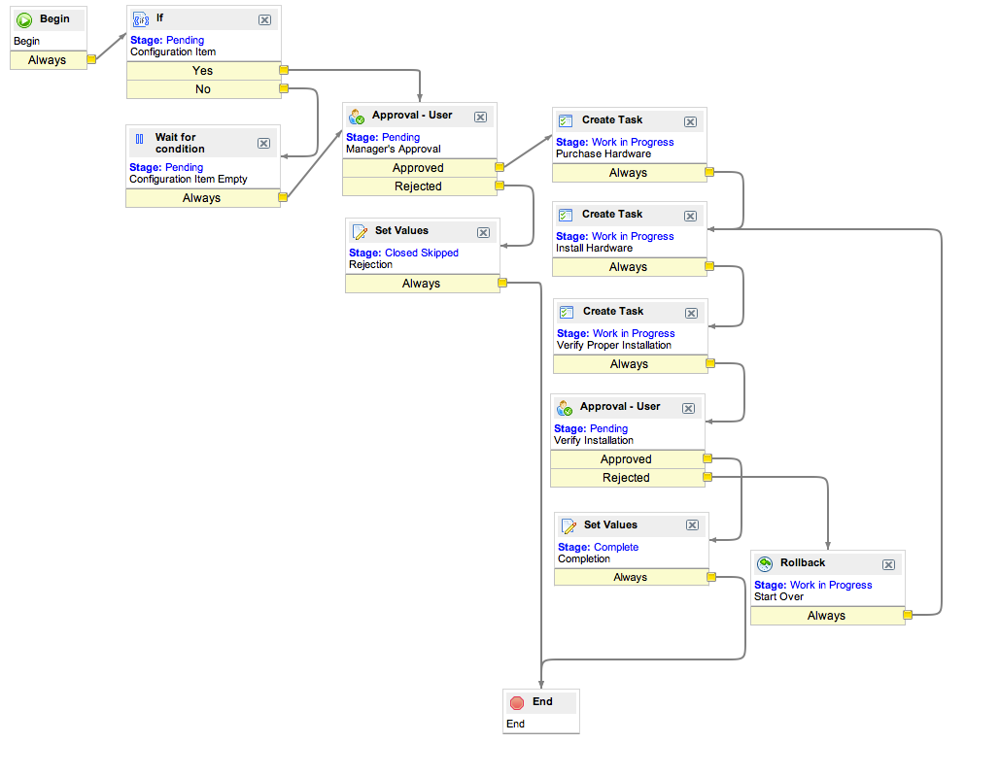

Defining a Change Management Workflow
From ServiceNow Wiki
| |
Note: This article applies to Fuji. For more current information, see Change Management at http://docs.servicenow.com
The ServiceNow Wiki is no longer being updated. Please refer to http://docs.servicenow.com for the latest product documentation. |
1 Overview
The Graphical Workflow Editor allows administrators to automate and define standard Change Management processes. The example workflow here performs the common task of upgrading hardware. The workflow can be reused any time that hardware is added to a configuration item.
In addition to manually defined workflows, you can install three basic Change Management workflows with the Change Management Workflows Plugin.
2 Defining a Change Management Workflow
- Navigate to Workflow > Workflow Editor and click New.
- Populate the form as follows:
- Name - Hardware Upgrade
- Table - Change Request [change_request]
- If condition matches - Run the Workflow
- Run after bus. rules run - True. This field needs to be checked before any workflow that uses approvals, or the business rules will conflict with the workflow and fail to run properly. If this field does not appear on the Workflow Properties form, it will need to be added.
- Expected Time - Days 7 Hours 00:00:00.
- Stage Field - State. As the workflow passes from activity to activity, activites can update the state field accordingly.
- Conditions - Reason is Hardware upgrade
- Drag the If activity onto the arrow between Begin and End. This activity will verify that a configuration item has been specified. Complete the fields as follows:
- Name - Configuration Item
- Stage - Pending
- Condition - Configuration Item is not empty.
- Drag the Wait for Condition activity into the space below the If activity. This activity will wait for a configuration item to be supplied if none was originally supplied. Complete the fields as follows:
- Name - Configuration Item Empty
- Stage - Pending
- Condition - Configuration Item is not empty.
- Drag an arrow from the No tab of the If activity to the end of the Wait for Condition activity.
- Drag the Approval - User activity onto the arrow between If and End. This activity will request an approval from the assignment group's manager. Complete the fields as follows:
- Name - Manager's Approval
- Stage - Pending
- User - Dot-walk to ${assignment_group.manager}
- Drag an arrow from the Wait for Condition activity to the Approval - User activity.
- Drag the Set Value activity into the space next to Approval - User. This activity will mark the change as Rejected. Complete the fields as follows:
- Name - Rejection
- Stage - Closed Skipped
- Set These Values: - Approval Rejected.
- Drag an arrow from the Rejected tab at the bottom of Approval - User to Rejection and drag the tab at the bottom of Rejection to End.
- Drag the Create Task activity onto the the arrow between Approval - User and End. This will create a catalog request for Procurement to acquire the hardware. Note that if there is a catalog fulfillment workflow that applies to this task, it will run. Complete the fields as follows:
- Name - Purchase Hardware
- Stage - Work in Progress
- Task Type - Request [sc_request]
- Priority - 3 - Moderate
- Fulfillment Group - Procurement
- Name - Purchase Hardware
- Drag the Create Task activity onto the the arrow between the previous task and End. This will create a Change Task for Hardware to install the hardware. Complete the fields as follows:
- Name - Install Hardware
- Stage - Work in Progress
- Task Type - Change Task [change_task]
- Priority - 3 - Moderate
- Fulfillment Group - Hardware
- Drag the Create Task activity onto the arrow between the previous task and End. This activity will generate a task to verify the installation. Complete the fields as follows:
- Name - Verify Proper Installation
- Stage - Work in Progress
- Fulfillment Group - Software
- Right click the Approval - User activity and select Copy Activity. Drag the arrow from the last task to the copied approval, and drag another arrow from the copied approval's Approved tag to End. This will ask the manager to verify the installation again. Click the copied Approval and update the form as follows:
- Name - Verify Installation
- Drag the Set Values activity into the space next to Approval - User. This activity marks the change as Completed. If you also want the corresponding Change record to automatically close upon workflow completion, mark the Stage as Closed Complete instead. Complete the fields as follows:
- Name - Completion
- Stage - Complete or Closed Complete
- Set These Values: - Additional Comments: This change has been verified as being completed successfully.
- Drag the Rollback activity into the arrow after the second Approval - User. This activity starts the change over if the manager rejects it. Complete the fields as follows:
- Name: Start Over
- Stage: Work in Progress
- Comment Field: Additional Comments
- Comments: The change was restarted due to rejection.
- Drag the arrow from the Rejected tab of the second Approval - User to the Rollback activity, and from the Rollback activity to Install Hardware.
- If you want the workflow to automatically close the change request after the workflow completes, do one of the following:
- Have the change workflow run as a subflow activity. After the change subflow completes, add a Set Values activity in the main workflow to set the desired state of the task.
- Add a Set Values or Run Script activity to set the desired state of the task.
- Publish the workflow in the Workflow Actions menu.
- The resulting workflow should be as follows:
- 
{kind=link}
{kind=link}
{kind=link}
{kind=link}
{kind=link}
{kind=link}
{kind=link}
{kind=link}
{kind=link}
Contents > Administer > Workflow > Workflow Examples
Contents > Deliver > IT Services > Change Management
Was this article helpful?
Yes, I found what I needed
No, I need more assistance